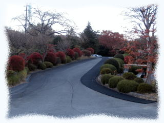
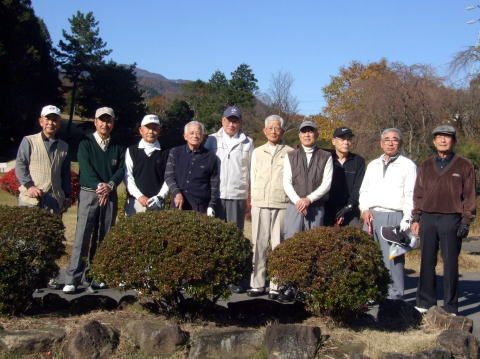
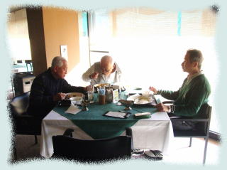
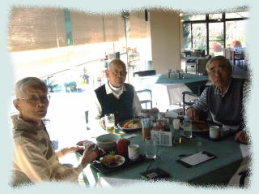
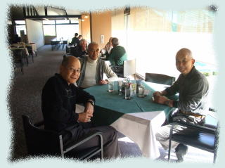
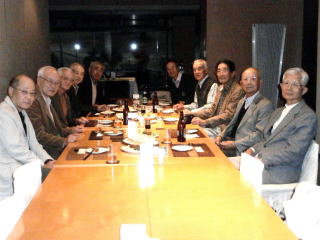
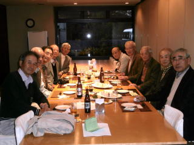
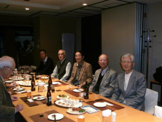
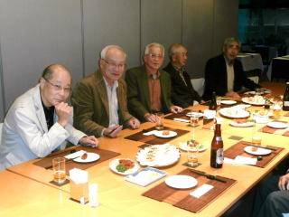

| 横浜国立大学工学部第四寮 |
第12回弘南寮ゴルフ大会
時：平成25年11月22日（金）
所：小田原湯本カントリークラブ

第12回弘南寮ゴルフ大会は、当初、春に行う予定であったが
延期され、秋開催で、前回と同じ
小田原湯本カントリークラブで行われた。
幹事役の伊勢本さん、野村慎一さん、ご苦労様でした.
| 参加者10名、組合せ（括弧内はハンディキャップ） 第1組：伊勢本幸雄(15)、高本幹永(22)、古市一雄(35) 第2組：高石周志(17)、野村慎一(18)、山之内克彦(23) 第3組：野村安広(7) 、秋山正樹(19)、安岡慶和(27)、高橋千穐(33) |
| スタート前、クラブハウス前のパター練習場脇にて 天候に恵まれ、トリッキーであるが趣のある山岳コースで、それぞれプレーを楽しんだ。 富士山を背景に取り入れたいとのことでパター練習場内で撮影しようとしたら、スタッフに注意され、練習場脇に移動、あら不思議、背景の富士山が消えていることに後で気付いた。ゴメンナサイ（撮影者高橋） |
|  | 左から 秋山正樹 建築38、 伊勢本幸雄 造船36、 高石周志 電工36、 古市一雄 機械34、 高本幹永 機械34、 山之内克彦 機械34、 野村安広 建築37、 安岡慶和 機械40 野村慎一 電工40、 高橋千穐 応化37 |
|  |  |  |
| 第1組 | 第2組 | 第3組 |
| 成績 優 勝：高本幹永 97 (45+52)-22=75 ･･･新HD 17 準優勝：山之内克彦 98 (52+46)-23=75 ･･･新HD 20 ３ 位：秋山正樹 94 (49+45)-19=75 ･･･新HD 18 ＢＢ：高橋千穐 118 (60+58)-33=85 優勝から３位まで、同一ネットであったが、会則に従って年齢順で順位決定。 賞品はないが、ベスグロは、野村安広 85(42+43) NP：高石周志、野村安広×２、野村慎一 喜寿を過ごされた高本さん、山之内さんが入賞、また、古市さんが会長を勤められている フジテクノ㈱で、この機械34年卒同期の御三方が現役でご活躍中とのこと。 先輩方はお元気で大変頼もしく、我々は勇気付けられます。 今回、参加されなかった方々も含め、来年盛大に第13回目が開催される様祈っております。 プレー後のパーティで、次回、幹事は高本さん、副幹事は山之内さん、 次回開催予定日は、平成26年5月23日（金）に一応決定。 |
ささやかながら、和やかな雰囲気で行われたパーティ
 
 
＊ 文中一部敬称略。
本件は、幹事伊勢本幸雄さんの報告メールを基に作成
パーティ等の写真は、山之内克彦さんのご提供による。
以上 高橋千穐 記